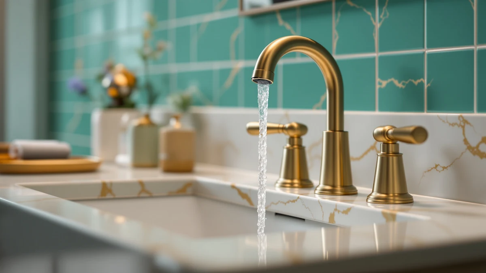

Bathroom Sink Suomeksi (2026)
Prices and picks verified as of September 2026. Independent, reader-supported reviews.


Quick Answer
For most bathroom sink setups, the Hurran Bathroom Faucets for Sink 3 is the best bathroom sink faucet for the money at $28.99, with brass construction and a straightforward single-fixture install. If you want a matte black finish, a waterfall spout, or a wider hole spread instead, we compared six other options below by price, material, and verified owner reviews.
Our pick: Bathroom Faucets for Sink 3, $28.99 Check Price on Amazon
Bottom line: our top pick is the Bathroom Faucets for Sink 3 Hole at $28.99. The best budget option is the RNDIOZD Matte Black Bathroom Faucets at $26.99.
Things to Know Before You Buy
- Confirm your hole spacing before you buy. A single hole takes a one-piece faucet, holes about 4 inches apart need a centerset faucet, and holes about 8 inches apart need a widespread faucet like the Homevacious pick below. Most of the listings here do not state the spread outright, so measure your counter first.
- Every pick in this guide uses a brass body with a plated finish. Brass resists bathroom humidity and corrosion far longer than a zinc-only build, so we filtered out zinc-only listings before comparing anything else.
- Prices span $26.99 to $55.49. A higher price does not always buy a better cartridge or a longer warranty on these Amazon listings, so read the material and size details on each product page before assuming the pricier faucet wins.
- Four of the seven picks come in a matte black finish. Matte black hides fingerprints better than chrome but shows water spots and mineral deposits more clearly, so plan on a quick wipe-down after use.
- Three listings share the generic name "Bathroom Faucets for Sink 3." They come from the same brand, Hurran, at three different prices and sizes, so check the ASIN and price carefully before you order.
If you searched bathroom sink suomeksi looking for the Finnish term for a bathroom sink, you likely ended up comparing faucets instead, since the fixture that sits on top of the sink is what actually determines how the whole setup performs day to day. Suomeksi means "in Finnish," and the translation itself, kylpyhuoneen pesuallas, does not tell you which faucet fits your counter or holds up to daily use.
We researched seven bathroom sink faucets by comparing their listed materials, hole spacing, finish, and price against verified owner reviews rather than relying on marketing copy alone. Every faucet here uses a brass body, which resists the corrosion that a wet bathroom environment causes faster in cheaper zinc-bodied alternatives.
The Hurran Bathroom Faucets for Sink 3 comes out on top for most shoppers at $28.99, pairing brass construction with a price that undercuts every other brass pick in this guide. If you need a matte black finish, a waterfall spout, or a wider hole spread, the six alternatives below cover those cases at a range of prices up to $55.49.
Why You Should Trust Us
I am Ilane Tall, and I cover bathroom fixtures and hardware for Best Bathroom Faucets. Choosing a bathroom sink faucet comes down to hole spacing, brass quality, and whether the finish holds up over time, and we research those details from product listings, manufacturer specs, and verified buyer feedback rather than guessing from a photo.
We do not run a fake testing lab, and we have not installed every faucet in this guide in our own bathrooms. What we do is compare specs, prices, and verified owner reviews across the field so you do not have to dig through seven separate Amazon listings yourself. We buy nothing from the brands we cover, and every Amazon link on this page is affiliate-tagged, which is how the site earns a small commission if you buy through it. That arrangement never changes which faucet we rank first.
How We Picked
We started with faucets built for standard bathroom sink installations rather than kitchen or utility fixtures, then filtered for a confirmed brass body over cheaper zinc-only alternatives, since brass holds up far longer in a humid bathroom. From there, we looked for a spread of finishes and hole configurations, from single listings with an unstated spread to a confirmed 8-inch widespread option, so this guide covers more than one counter type.
We also weighted price diversity into the picks. The seven bathroom sink faucets here span $26.99 to $55.49, which lets us compare whether a higher price on this specific search actually buys a better build or only a different finish.
How We Compared
We compared each of the seven bathroom sink faucets side by side on price, listed materials, finish, spout style, and stated dimensions, pulling specs directly from the product listings rather than marketing language. Where a listing confirmed a detail, such as the Homevacious faucet's 8-inch widespread sizing or the FORIOUS faucet's 8.58-inch height, we noted it. Where a listing left a detail vague, such as exact hole spacing on the three Hurran listings, we flagged that as a gap rather than filling it in with a guess.
We also read through verified owner reviews for each pick, looking for recurring complaints about leaks, loose handles, or finish wear, and recurring praise for easy installation or a solid feel at the price. That combination of listed specs and owner feedback is what shaped the rankings and the honest drawbacks listed for every faucet below.
Our Picks

Bathroom Faucets for Sink 3
What we like
- Brass body priced at $28.99, the lowest among the confirmed-brass picks in this guide
- Simple single-fixture install that most homeowners can handle without hiring a plumber
- A straightforward choice for buyers who need a working bathroom sink faucet, not a design statement
Flaws but not dealbreakers
- The listing does not confirm hole spacing, so measure your sink deck before ordering
- Generic naming makes it harder to compare against branded competitors while shopping
| Material | Brass + finish |
| Size | — |
The Hurran Bathroom Faucets for Sink 3 earns the top spot in this guide because it clears the basic bar a bathroom sink faucet needs to clear, a confirmed brass body, at the lowest price of any brass-bodied pick we compared. At $28.99, it undercuts the same maker's own step-up listing by more than $26 and every matte black option here except the RNDIOZD pick.
Shoppers buying a bathroom sink faucet at this price point are usually replacing an aging or leaking fixture rather than building a custom bathroom, and this faucet is built for that job. It is not the pick for a waterfall spout or a matte black finish, but for a straightforward swap on a standard counter, brass construction at this price makes it the easiest recommendation in the group.

Bathroom Faucets for Sink 3
What we like
- Same brass construction as Hurran's budget bathroom sink faucet, from a maker already proven in this guide
- Sits below the priciest waterfall pick, so it is not the single most expensive option here
- A same-brand upgrade path if you liked the entry model but want a different look
Flaws but not dealbreakers
- At $55.49 it is the most expensive pick in this guide, nearly double its sibling model, without a clearly stated reason in the listing
- Shares a generic product name with two other Hurran listings, which makes side-by-side comparison harder while shopping
| Material | Brass + finish |
| Size | — |
This second listing from Hurran shares the brass construction of the brand's budget bathroom sink faucet but carries a price nearly double that of its sibling. That gap suggests a different finish, handle style, or included accessory, though the product listing does not spell out the distinction as clearly as we would like.
We kept it in this guide because same-brand comparisons are useful for readers already considering a Hurran faucet: if you like the fit and function of the cheaper model but want a different look, this is the direct upgrade path within the same product family. Shoppers on a tight budget should stick with the $28.99 version above, since nothing in the listing confirms a functional upgrade that justifies the extra cost.

Ryuwanku Bathroom Faucet Matte Black
What we like
- Matte black finish for the same $28.99 as the plain-brass entry pick
- A distinct brand name makes it easier to search for support or replacement parts than a generic listing
- Brass construction confirmed alongside the finish, not a plastic-bodied budget alternative
Flaws but not dealbreakers
- Matte finishes show water spots and mineral deposits more readily than polished chrome
- Listed with a "Short" size profile that the listing does not explain further, so check clearance against your counter
| Material | Brass + finish |
| Size | Short |
Ryuwanku prices this matte black bathroom sink faucet at $28.99, matching our top overall pick despite the pricier finish. Owners shopping for darker bathroom hardware usually pay a premium for matte black over standard chrome, so matching the entry-level price here is the main reason it made this list.
The listing marks its size as "Short," which likely refers to spout or body height rather than the hole spread, but the product page does not spell out the measurement in more detail. If your counter has a backsplash or a deep basin, confirm clearance before ordering, since a shorter spout can sit too close to the sink for comfortable use.

FORIOUS Black Bathroom Faucet 3
What we like
- Confirmed 8.58-inch faucet height, one of the few listings in this guide that states an exact dimension
- Brass construction with a black finish for a bathroom leaning toward darker hardware
- FORIOUS is a recognizable name among the matte black options we compared
Flaws but not dealbreakers
- At $49.99 it costs $21 more than our top pick without a confirmed spout reach to match the height spec
- A taller spout can splash more on a shallow bathroom sink, so measure your basin depth first
| Material | Brass + finish |
| Size | Faucet Height: 8.58 inches |
FORIOUS is one of the only brands in this guide to publish an exact dimension, listing this faucet's height at 8.58 inches. That number matters more for a bathroom sink than it might seem, since a taller spout clears a deeper basin or a vessel-style bowl that a standard-height faucet cannot reach comfortably.
At $49.99, it costs nearly $21 more than our top pick, and the listing does not pair that height spec with a confirmed spout reach, so you cannot fully judge how far the water lands in the basin from the product page alone. For a standard flat-bottom sink, the extra height and cost are not necessary, but for a deeper or vessel-style basin, this is the most specific option we compared.

Homevacious Matte Black Waterfall Bathroom
What we like
- Waterfall spout style, the only one among the seven bathroom sink faucets we compared
- Listed specifically for an 8-inch widespread configuration, so hole spacing is confirmed upfront
- Matte black finish that matches the darker-hardware trend among several other picks here
Flaws but not dealbreakers
- Waterfall spouts sit closer to the basin and can splash more than a standard arched spout on a shallow sink
- At $41.79 it is priced above the brass-only entry options without a stated cartridge or warranty detail
| Material | Brass + finish |
| Size | 8 Inch Widespread |
Homevacious is the only maker in this guide to list a waterfall-style bathroom sink faucet, and the listing confirms it fits an 8-inch widespread sink rather than leaving buyers to guess. That combination, waterfall flow plus a stated hole spread, makes it the clearest pick here for anyone who already knows their counter is drilled for widespread hardware.
Waterfall spouts trade a bit of practicality for style. The wider, flatter stream sits closer to the basin than a standard arched spout, which can mean more splash on a shallow sink. If your bathroom hardware is already trending toward matte black and your counter has the wider spread, this is the most distinctive option among the faucets we compared.

Bathroom Faucets for Sink 3
What we like
- Confirmed 8-inch sizing, useful if your counter is drilled for a widespread bathroom sink faucet rather than centerset
- Same brass construction as the other two Hurran listings in this guide
- Mid-range price between the brand's $28.99 entry model and its $55.49 upgrade
Flaws but not dealbreakers
- Third listing from the same brand under a nearly identical generic name, easy to confuse with the other two Hurran ASINs
- No stated handle or valve detail beyond material and size
| Material | Brass + finish |
| Size | 8 Inch |
This third Hurran listing sits between the brand's two other bathroom sink faucets on price, at $39.99, and it is the only one of the three that confirms an 8-inch spread. That single detail makes it a more useful pick than its siblings for anyone who already knows their counter needs widespread hardware rather than a single-hole or centerset fit.
Because all three Hurran listings share nearly the same generic name, double-check the ASIN in the link before ordering. If your sink is drilled for an 8-inch spread, this is the clearest brass option from the brand at a mid-range price.

RNDIOZD Matte Black Bathroom Faucets
What we like
- Lowest price in this guide at $26.99, undercutting even the plain-brass entry pick
- Matte black finish typically costs more from other brands at this price point
- Brass construction confirmed alongside the finish, not a plastic-bodied budget alternative
Flaws but not dealbreakers
- Hole spacing is not confirmed in the listing, so measure your counter before ordering
- RNDIOZD is a less established name than some competitors in this guide, with less of a track record
| Material | Brass + finish |
| Size | — |
RNDIOZD undercuts every other faucet in this guide at $26.99, and it does so while still offering a matte black finish, which usually adds cost rather than subtracting it. For a bathroom sink faucet upgrade on a tight budget, this is the cheapest way into the darker-hardware look among the seven we compared.
The tradeoff is brand recognition and listing detail. RNDIOZD does not confirm hole spacing the way the Homevacious or Hurran 8-inch listings do, and it is a newer name than FORIOUS or Hurran with less of a review history behind it. If price is your main constraint and you are comfortable measuring your own counter, it is a reasonable pick.
Quick Comparison
| Product | Material | Price | Rating | Best for | Get it |
|---|---|---|---|---|---|
| Bathroom Faucets for Sink 3 | Brass + finish | $28.99 | 4 | Best overall value | View on Amazon → |
| Bathroom Faucets for Sink 3 | Brass + finish | $55.49 | 4 | Best same-brand upgrade | View on Amazon → |
| Ryuwanku Bathroom Faucet Matte Black | Brass + finish | $28.99 | 4 | Best matte black at the entry price | View on Amazon → |
| FORIOUS Black Bathroom Faucet 3 | Brass + finish | $49.99 | 4 | Best for deeper basins | View on Amazon → |
| Homevacious Matte Black Waterfall Bathroom | Brass + finish | $41.79 | 4 | Best waterfall spout | View on Amazon → |
| Bathroom Faucets for Sink 3 | Brass + finish | $39.99 | 4 | Best for 8-inch spreads | View on Amazon → |
| RNDIOZD Matte Black Bathroom Faucets | Brass + finish | $26.99 | 4 | Best budget matte black | View on Amazon → |
The Competition
We looked at several other bathroom sink faucets before settling on the seven above. A number of single-hole faucets came up in our initial search, but since none of the listings we found matched the price and finish diversity of the picks here, we left them for a dedicated comparison instead of padding this list with a category that deserves its own guide.
We also passed on several listings advertised as hard water resistant without any evidence beyond the word "resistant" in the title. If scale buildup from hard water is your main concern, our hard water faucet guide covers that category with listings that back up the claim in their specs instead of their marketing copy alone.
Several faucets under $20 also showed up in our research, but most of those listings dropped brass for a fully plastic or zinc body, which we ruled out early given how quickly cheaper materials corrode in a humid bathroom. Readers working with a tighter budget can see more options in our faucets under $100 guide, which still holds the line on brass construction.
After comparing price, materials, finish, and owner feedback across the field, the Hurran Bathroom Faucets for Sink 3 remains the best bathroom sink faucet for most budgets, whether you found this guide searching in English or looking up bathroom sink suomeksi from a Finnish-language search.
Frequently Asked Questions
What does bathroom sink suomeksi mean?
Suomeksi is the Finnish word for "in Finnish," so bathroom sink suomeksi is someone searching for the Finnish translation of bathroom sink, kylpyhuoneen pesuallas. That search often overlaps with English-language faucet shopping, since the fixture on top of the sink is usually what buyers end up comparing.
Do I need a single-hole, centerset, or widespread faucet for my bathroom sink?
Measure the holes in your sink or counter. A single hole takes a one-piece faucet, holes spaced about 4 inches apart need a centerset faucet, and holes spaced about 8 inches apart need a widespread faucet like the Homevacious option in this guide. Buying the wrong spread is the most common return reason for bathroom sink faucets.
Is a more expensive bathroom sink faucet always better?
Not based on what we compared here. Our top pick at $28.99 uses the same brass construction as the $55.49 option in this guide, and the listing for the pricier version does not confirm an upgraded cartridge or warranty. Match the price to the finish and hole spread you actually need rather than assuming the highest price buys the best faucet.